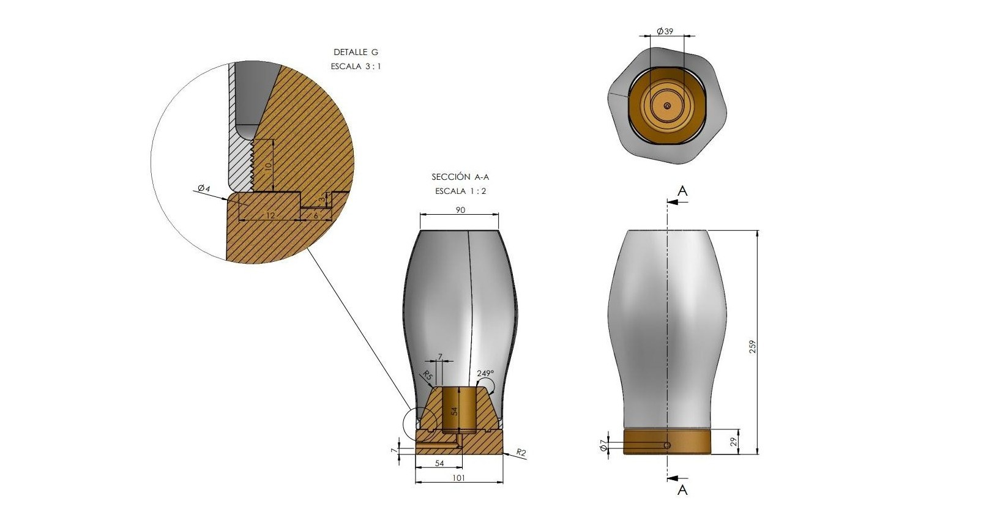
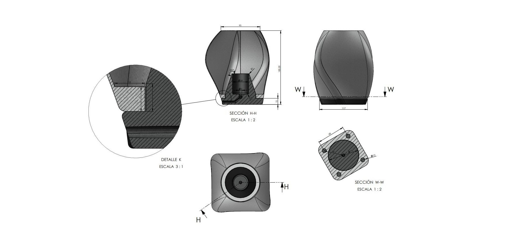

Serie
Dualis

El Análisis
El diseño de la lampara RIND parte de una exploración de formas orgánicas y su traducción a un objeto funcional. La geometría del difusor, con acabado rugoso, busca generar una luz más difusa y cálida, mientras que la base en tono naranja introduce un punto de contraste y una referencia cromática vinculada al contexto mediterráneo.
La estructura se resuelve en tres piezas ensambladas mediante un sistema de rosca, permitiendo un montaje sencillo y facilitando el acceso a los componentes internos. Esta división responde tanto a criterios de fabricación mediante impresión 3D como a la optimización del proceso de montaje. El resultado es una lámpara compacta que equilibra expresividad formal y funcionalidad.
Filosofía de Diseño
Esta lámpara nace de la intención de capturar una sensación más que una forma concreta. Su lenguaje formal se construye a partir de volúmenes suaves y una superficie rugosa que simula la corteza de la naranja, reforzando su vínculo material y sensorial desde lo táctil y lo visual.
El uso del color naranja no es casual, sino que conecta con el imaginario local, evocando la identidad de Valencia desde una aproximación contemporánea y abstracta. El contraste con el difusor blanco refuerza la idea de origen y emisión, como si la luz emergiera desde el interior. Se busca un objeto cercano que funcione tanto encendido como apagado.



El Análisis
El diseño se centra en una aproximación más controlada y geométrica, donde la forma del pétalo define tanto la estructura como la identidad del objeto. El difusor blanco liso permite una distribución homogénea de la luz, mientras que la base negra introduce un contraste claro técnico.
La lámpara se compone de dos piezas principales unidas mediante un sistema de rosca, simplificando su construcción y reduciendo elementos innecesarios. La ligera rotación de la base genera dinamismo en la silueta, aportando variación visual sin comprometer la estabilidad ni la funcionalidad del conjunto.
Filosofía de Diseño
A diferencia de la primera pieza, esta lámpara se construye desde la precisión y el control formal. La referencia orgánica del pétalo se traduce en una geometría más limpia y contenida.
En este caso se busca un contraste directo con la otra lámpara de la serie: frente a una superficie rugosa, cálida y expresiva, aquí se plantea una pieza lisa, en tonos oscuros y con una luz más fría. Esta dualidad refuerza la idea de conjunto, casi como una relación entre día y noche, donde cada objeto representa un carácter opuesto pero complementario.
El juego entre superficies lisas y contrastes cromáticos busca una estética más sobria y contemporánea. La ligera rotación introduce un matiz de movimiento, evitando que el objeto sea completamente estático y aportando dinamismo dentro de una composición controlada.

